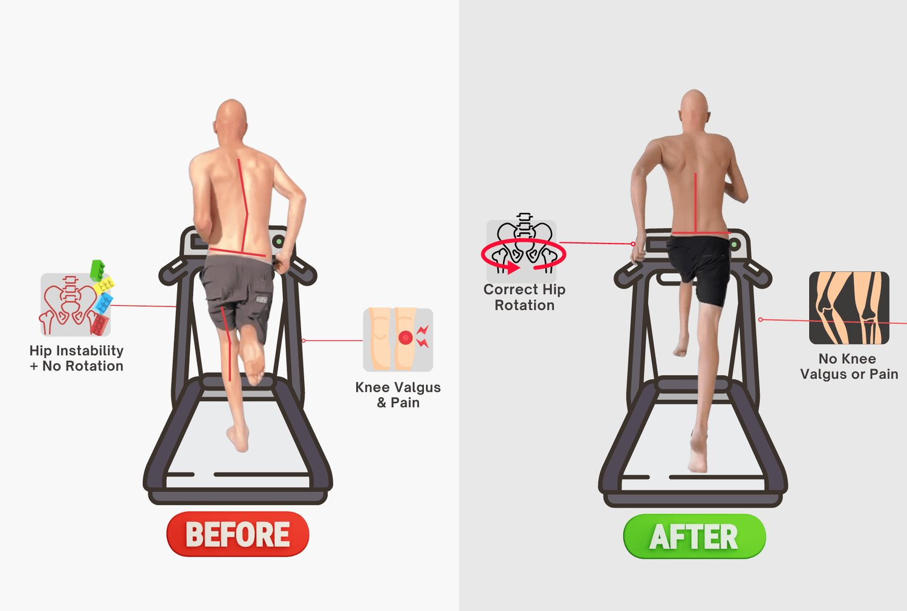
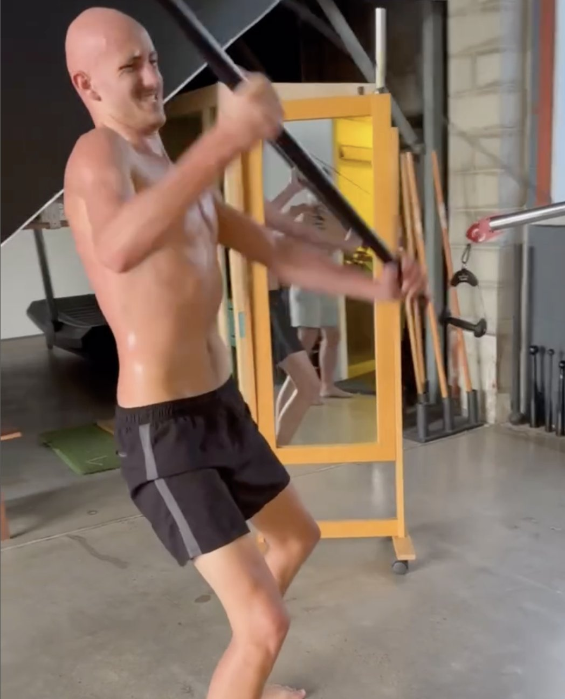

If your back hurts from bad posture, it’s often a sign of deeper issues. Poor posture strains your spine, core muscles, and soft tissue, leading to back pain, muscle spasms, and even long-term spinal conditions. Unlike temporary fixes, Functional Patterns focuses on assessing your posture and gait to correct these issues at the root.
How Poor Posture Leads to Back Pain
Your posture affects how your entire body functions. Poor posture—whether sitting, standing, or moving—disrupts the natural alignment of your spine. Over time, this causes muscle imbalances, spinal conditions, and back pain.
Misalignment in your spine or shoulders creates strain in soft tissues and core muscles. This leads to chronic pain, especially in the lumbar spine. Poor posture related back pain often starts from incorrect movement patterns. This weakens your core muscles and leads to muscle spasms and lumbar disc problems.
Back pain and bad posture go hand in hand as the body compensates for misalignment. This causes issues such as shoulder blade discomfort and spinal issues.

The Importance of Assessing Posture and Gait
Correcting posture starts with understanding how your body moves. Functional Patterns assesses your gait (the way you walk) to identify imbalances in your hips, knees, shoulders, and spine. Bad posture & spine pain coexist because of the imbalanced movement patterns that cause the poor posture.
Analysing your gait (walking or running) reveals how poor posture develops and helps tailor your training. The training aims to strengthens core muscles, improves standing posture, and relieve back pain. Without assessing movement, posture correction becomes guesswork, often ignoring critical spinal conditions like lumbar disc issues.
Poor posture back pain isn’t just about sitting posture—it’s about how your entire musculoskeletal system functions. Posture assessment allows FP to target muscle imbalances, soft tissue strain, and spinal misalignment.

Why Movement Matters for Posture Correction
The human body is designed for movement—walking, running, and rotating. Poor posture back pain often arises from a sedentary lifestyle with prolonged sitting or standing.
Many people believe that standing or sitting for long periods of time is the root cause of their poor posture an back pain. However, most people today stand and sit for long periods and mot everyone suffers from poor posture and back pain. This is because HOW YOU MOVE dictates the quality and balance of your standing and sitting.
Functional Patterns trains movement patterns that align with the body’s natural functions. By focusing on fundamental movements, FP improves posture, reduces backache from bad posture, and addresses risk factors like muscle spasms and soft tissue strain.
Muscle imbalances from poor posture affect your spine, core, hips, knees, and upper body. FP’s focus on dynamic movement ensures that you not only improve your posture but also prevent spinal conditions.

Correct Movement Patterns Fix Posture and Pain
Correct movement patterns align your spine, strengthen core muscles, and relieve back pain. Functional Patterns integrates biomechanically sound movements that mimic natural functions, ensuring long-term results.
This approach improves sitting posture, reduces lumbar disc strain, and prevents future spinal conditions. Training at FP means enhancing your upper body alignment, balancing hips and knees, and addressing muscle imbalances. Functional Patterns doesn’t just strengthen your core—it improves your overall musculoskeletal health, reducing back pain from posture-related issues and promoting long-term spinal health.

Functional Patterns: A Holistic Solution
Functional Patterns Brisbane offers holistic posture correction through gait analysis and functional movement training. Improve your posture, reduce back pain, and strengthen your core for long-term health.
Avoid the cycle of quick fixes and build lasting spinal health with Functional Patterns. FP’s holistic approach addresses muscle spasms, lumbar disc issues, and spinal conditions. The method ensures that your back pain from bad posture becomes a thing of the past.
Long periods spent with poor posture can cause lasting health problems and pain. With Functional Patterns, you can strengthen your core, improve your posture, and eliminate back pain. If you're suffering from a sore back from bad posture, start Functional Patterns training today.